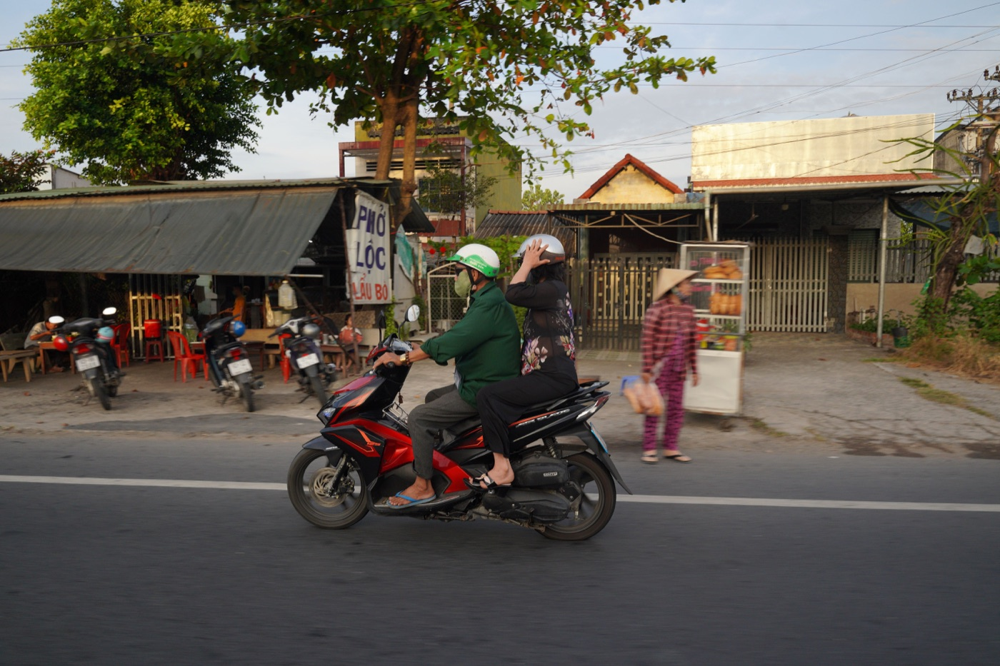
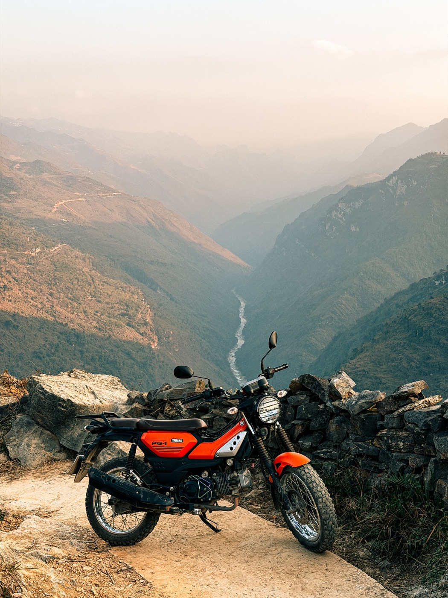

오토바이 제동 제대로 하는 법

자신 있는 정지는 레버를 세게 쥐는 것이 아니라 올바른 순서에서 시작합니다. 대부분의 스쿠터는 오른쪽 레버가 앞 브레이크, 왼쪽이 뒤 브레이크지만, 주행 전에 내 오토바이에서 꼭 확인하세요.
왜 두 브레이크가 다 필요한가
감속할 때 무게가 앞으로 쏠려 앞바퀴의 접지력이 커지고 제동의 상당 부분을 맡습니다. 뒤 브레이크만 쓰면 제동 거리가 길어지고 미끄러질 수 있습니다. 핸들을 꺾은 채 앞 브레이크를 세게 잡는 것도 위험합니다. 좋은 습관은 두 레버에 부드럽게, 동시에 힘을 더해 가는 것입니다.
일반 제동 단계
- 미리 스로틀을 풀고 멈출 곳을 본다.
- 상황이 허락하는 만큼 오토바이를 똑바로 세운다.
- 두 레버를 부드럽게 잡기 시작한다.
- 한 번에 확 잡지 말고 힘을 점점 늘린다.
- 속도가 거의 없을 때만 발을 내린다.
비어 있는 마른 곳에서 시속 20–30km로 몇 번 멈춰 보고 레버 감각을 기억하면 좋습니다. 실제 감속이 어디서 시작되는지, 브레이크가 깊이 들어가지 않는지 알 수 있습니다.

커브, 모래, 젖은 차선
제동은 최대한 커브 전에 하세요. 기울인 상태에서는 부드러운 보정만: 타이어의 접지 여유가 적습니다. 모래, 금속 덮개, 흰 차선 도색, 젖은 타일 위에서는 모든 동작이 더 부드러워야 합니다. 거리를 늘리고 오토바이를 더 세워 두세요.
급정거
먼저 빠르게 스로틀을 닫고, 핸들을 펴고, 두 브레이크에 확실히 힘을 더하세요. 장애물이 아니라 빈 공간을 보세요. 바퀴가 미끄러지기 시작하면 해당 레버를 약간 풀었다가 다시 부드럽게 힘을 더하세요. ABS가 있으면 잠김을 막아주지만 거리와 좋은 타이어를 대신하지는 않습니다.
초보자의 실수
- 손가락으로 브레이크를 계속 살짝 잡고 달리기;
- 뒤 브레이크만 쓰기;
- 핸들을 꺾은 채 앞 레버를 급하게 잡기;
- 신호등 앞에서 마지막 순간에 제동하기;
- 비, 세차, 오래 세워둔 뒤 브레이크를 확인하지 않기.
짧은 결론
올바른 제동은 두 브레이크, 똑바로 선 오토바이, 부드럽게 늘리는 힘, 충분한 거리입니다. 구매 후 꼭 안전한 곳에서 연습하세요. 출발 전에는 2분 오토바이 체크리스트를, 산길은 50cc 오르막·내리막을 읽어보세요.